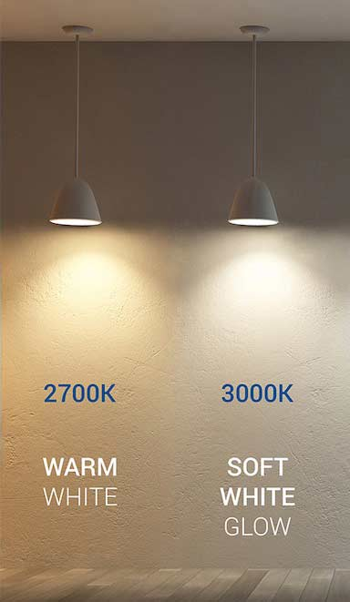

Products I Recommend
I only use the highest quality products in my projects. All of the products I use come from well-established manufacturers with lengthy warranties. Furthermore, I consult with you and allow you the option of choosing which specific brands and fixtures to use on your property.


Fixtures Most Commonly Requested
Vista Professional Lighting
Vista professional outdoor lighting is one of the highest quality manufacturers on the market and offer a wide range of fixtures. I have found that the most commonly requested fixtures come from vista professional outdoor lighting, and I have highlighted them below.

All of Vista's fixtures are outfitted with "green" low-energy consuming bulbs, minimizing your monthly electricity consumption and costs.
After deciding upon fixtures, I will choose a bulb for each fixture based on your desired temperature. I will install a bulb to provide warm light or cool light.

Fixture #5006
One of Vista Pro's most popular uplights used in the landscape, the 5006 Up & Accent Fixture with shroud comes factory installed with Vista's new MR-16 LED lamp. Boasting the energy savings of LED technology and the flexibility and performance of MR-16 Halogen lamps, Vista's new MR-16 LED lamps come in your choice of 4.5W (equivalent to 20W halogen) or 5.5W (equivalent to 35W halogen) factory-installed. Available in 15°, 25°, 36° and 60° beam spread options.

Fixture #5005
The 5005 Up & Accent Fixture comes factory installed with Vista's new MR-16 LED lamp. Boasting the energy savings of LED technology and the flexibility and performance of MR-16 Halogen lamps, Vista's new MR-16 LED lamps come in your choice of 4.5W (equivalent to 20W halogen) or 5.5W (equivalent to 35W halogen) factory-installed. Available in 15°, 25°, 36° and 60° beam spread options.

Fixture #6507
This low voltage LED path light fixture is constructed from heavy-gauge, copper-free, die-cast aluminum for lasting strength and durability under all weather conditions. A high impact polycarbonate lens is textured for even light distribution and perfectly sealed for maximum protection in all damp and wet locations. Shipped with a 6 inch diameter hood.

Fixture #4704
A perfect fit for the contemporary landscape design, this low voltage path light fixture is constructed of die-cast, copper-free aluminum for strength and reliability. A super durable polyester powder-coated finish is applied and available in 18 colors. A clear, high impact, polycarbonate lens safeguards the lamp and optics. Shipped with 7 3/8 inch diameter hood.

Fixture #2267
A very popular path light choice in the landscape. This low voltage path light fixture is constructed of die-cast, copper-free aluminum for strength and reliability. The stem is a 1/2" schedule-40 aluminum pipe with a 1/2" NPT. A super durable polyester powder-coated finish is applied and available in 18 colors. Shipped with a 5 1/2 inch diameter hood.

Fixture #2265
A slightly smaller version of path light #2267, this low voltage path light fixture is constructed of die-cast, copper-free aluminum for strength and reliability. The stem is a 1/2" schedule-40 aluminum pipe with a 1/2" NPT. A super durable polyester powder-coated finish is applied and available in 18 colors. Shipped with a 4 inch diameter hood.

Fixture #5106
The 5106 is a powerful and compact low voltage flood light fixture constructed of die-cast, copper-free aluminum and comes factory installed with advanced chip-on-board (COB) LED. With the energy savings of LED technology, the integrated, single LED chip/emitter is available in your choice of 2W, 3W and 4W. The fixture provides a powerful output range from 200-400 delivered lumens and also available in Warm, Neutral or Cool Color temp options.

Fixture #5105
The 5105 is a powerful and compact low voltage flood light fixture constructed of die-cast, copper-free aluminum and comes factory installed with advanced chip-on-board (COB) LED. With the energy savings of LED technology, the integrated, single LED chip/emitter is available in your choice of 2W, 3W and 4W. The fixture provides a powerful output range from 200-400 delivered lumens and also available in Warm, Neutral or Cool Color temp options.

ES Series Transformer
A rugged and reliable 150W transformer, ideal for smaller sites and energy-smart LED projects. A 20-guage, polished & clear coated stainless steel cabinet is weathertight and protects the components from moisture and debris. Dual voltage taps in 12-volt and 15-volt. Customize with Vista mechanical, digital, or astronomic timer modules.
The ES Series Transformer comes with a lifetime warranty.
I can also supply higher energy output transformers to accomodate the energy demands of your property and installed fixtures.

Digital Astronomical Timer
The set-it-and-forget-it timer!
Digital Astronomical Timer - Calculates time for dusk and dawn for every day of the year. This digital astronomical timer is self-adjusting, based on the seasonal variations of sunrise and sunset.
This timer is highly recommended - all of my customers have chosen to add this to their transformer.
All fixtures offer a wide selection of finishes

The most popular finishes are the V Series and Solid Brass
V Series

Solid Brass


Vista Finish Tiers
Vista offers their fixtures in several tiers of finishes. The Standard fixtures are sold at a base price while Premium< and Hand Crafted are sold at a small premium.